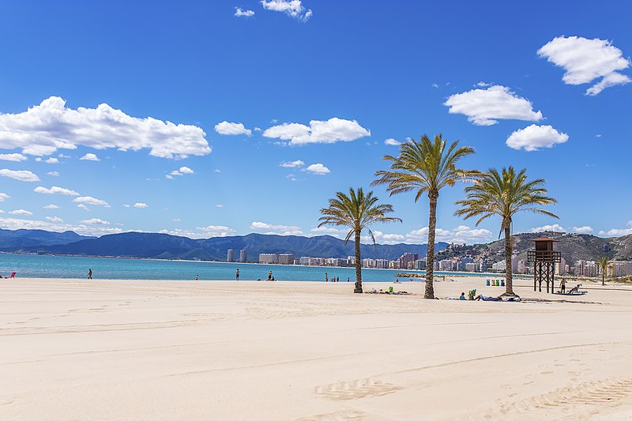

.svg.png "Bandera de Valencia") Provincia de Valencia
Provincia de Valencia
Valencia (en valenciano, València) es una provincia del este de España, situada en el centro de la Comunidad Valenciana.
La capital provincial es Valencia. Tiene una extensión de 10 763 km² y una población de 2 591 875 habitantes (INE 2020) con 266 municipios, siendo así la tercera provincia más poblada de España.
Limita con el mar Mediterráneo al este y con las provincias de Castellón y Teruel al norte, Cuenca y Albacete al oeste y Alicante al sur.
En 2021, el 61 % de los habitantes de la provincia (1 581 057) vivía en el área metropolitana de la capital. Aparte de Valencia ciudad,
otros municipios destacados son Torrente, Gandía, Paterna, Sagunto, Alcira, Onteniente, Játiva, Liria, Requena y Buñol. Véase Anexo:Municipios de la provincia de Valencia.
Ir al indice
Costa de Valencia
La Costa de Valencia es el tramo litoral que pertenece a la provincia de Valencia formando el golfo de
Valencia, un entrante del mar Balear Mediterráneo occidental), en las costas del este de España.
Limita con las otras dos costas de la Comunidad Valenciana, al norte con la Costa del Azahar (provincia de Castellón)
y al sur con la Costa Blanca (provincia de Alicante).
Ir al indice
Demilitacion Geografica
Tradicionalmente la denominación de Costa del Azahar también ha comprendido a la costa de la provincia de Valencia
incluso hasta llegar al cabo de la Nao en la de Alicante), pero la oficialización de la marca turística para referirse
solamente a la provincia de Castellón, ha hecho que últimamente, la denominación turística para la costa de la provincia
de Valencia se denomine simplemente Costa de Valencia. Coexiste también con la denominación en valenciano,
menos extendida, de Costa del Tarongers.
Ir al indice
Geografia..jpg "Playa de la Dehaesa de El Saler(Playa salvaje)")
La línea de costa que comprende la Costa de Valencia de 109 kilómetros posee muy pocos accidentes geográficos, siendo el más destacable el Cabo del Faro de Cullera, pues generalmente la
costa es baja y arenosa, lo cual favorece la presencia de abundantes arenales, como los de Cullera, Daimuz, Gandía, Miramar, Canet de Berenguer, Sueca y la propia ciudad de Valencia.
También son abundantes las zonas pantanosas (sobre todo en la llanura central) como las albuferas de Gandía y Oliva, siendo la más importante la albufera de Valencia.
También destacan las marismas como las de El Puig y Jaraco.
Los cultivos de arrozales más propios de la llanura central se compaginan con el cultivo de cítricos a lo largo de toda la costa y con el cultivo de hortalizas en el norte de la provincia.
De caudales irregulares y prácticamente escasos en la desembocadura, los ríos (de norte a sur) son el Palancia, Turia, Júcar y Serpis.
Ir al indice
Municipios
Las localidades situadas en la Costa de Valencia (de norte a sur) son: Canet de Berenguer, Sagunto, Puzol, El Puig, playa de Puebla de Farnals, playa de Masamagrell, Masalfasar, Albuixech, playa de Albalat dels Sorells, Foyos, Meliana, Port Saplaya (Alboraya), Valencia, El Perelló y Playas del Mareny (Sueca), Cullera, Tabernes de Valldigna, Jaraco, Grao de Gandía (Gandía), Daimuz, Guardamar de la Safor, playa de Bellreguard, Miramar, Piles y Oliva.
Sus principales centros turísticos son las ciudades de Valencia, Sagunto, Cullera y Gandía.
Ir al indice
Transportes
La Costa de Valencia está vertebrada por las autopistas A-7 y AP-7 que comunican todos los municipios principales y los conectan con Castellón de la Plana por el norte y con Alicante por el sur. También recorre la costa paralela la N-332 desde Oliva hasta Valencia y la N-340 a partir de la capital hasta Sagunto, sirviendo el tramo norte de la costa.
Desde el interior es fácilmente accesible por la A-3 viniendo desde Madrid y por la A-23 viniendo desde Teruel y Zaragoza.
Por vía aérea, la costa está servida por el Aeropuerto de Valencia.
Ir al indice
Naturaleza
A pesar de la intensa explotación turística de la costa de Valencia, posee rincones con elementos ecológicos de gran valor como playas salvajes, pinares y zonas de dunas. A destacar el tramo sur del municipio de Valencia que comprende la Dehesa del Saler (un bosque mediterráneo situado entre la costa y el lago de la Albufera). El parque natural de la Albufera y el parque natural del Marjal de Pego-Oliva son los principales recursos naturales.
La vegetación natural de la llanura litoral valenciana se conserva en pequeños refugios. El pino carrasco, el lentisco, el mirto o el palmito han sido sustituidos en muchos puntos de la costa por cultivos de árboles frutales como naranjos, limoneros, nísperos o algarrobos.
Sus extensas playas de arena fina son de gran calidad, 16 de las cuales gozan del certificado de Bandera Azul.
Ir al indice